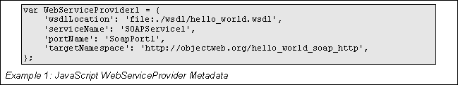
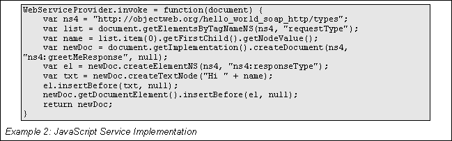
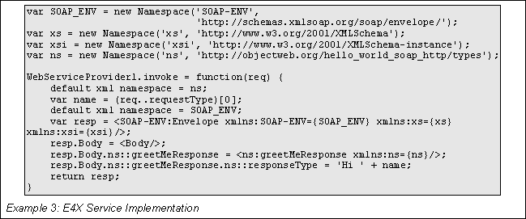
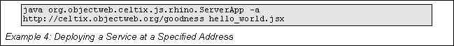
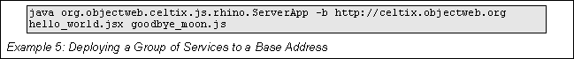
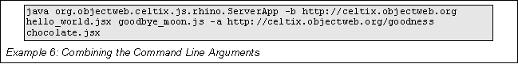

Using Dynamic Languages to Implement Services
Table of Contents
JavaScript, also known by its formal name ECMAScript, is one of the many dynamic languages that are growing in prevalence in development environments. It provides a quick and lightweight means of creating functionality that can be run on a number of platforms. Another strength of JavaScript is that applications can be quickly rewritten.
Celtix provides support for developing services using JavaScript and ECMAScript for XML(E4X). The pattern used to develop these services are similar to JAX-WS Provider implementations that handle their requests and responses (either SOAP messages or SOAP payloads) as DOM documents.
Writing a service in JavaScript is a two step process:
Normal Java providers typically use Java annotations to specify JAX-WS metadata. Since JavaScript does not support annotations, you use ordinary JavaScript variables to specify metadata for JavaScript implementations. Celtix treats any JavaScript variable in your code whose name equals or begins with WebServiceProvider as a JAX-WS metadata variable.
Properties of the variable are expected to specify the same metadata that the JAX-WS WebServiceProvider annotation specifies, including:
wsdlLocation specifies a URL for the WSDL defining the service.
serviceName specifies the name of the service.
portName specifies the service's port/interface name.
targetNamespace specifies the target namespace of the service.
The JavaScript WebServiceProvider can also specify the following optional properties:
ServiceMode indicates whether the specified service handles SOAP payload documents or full SOAP message documents. This property mimics the JAX-WS ServiceMode annotation. The default value is PAYLOAD.
BindingMode indicates the service binding ID URL. The default is the SOAP 1.1/HTTP binding.
EndpointAddress indicates the URL consumer applications use to communicate with this service. The property is optional but has no default.

Example 1
shows a metadata description for a JavaScript service
implementation.
You implement the service's logic using the required invoke property of the WebServiceProvider variable. This variable is a function that accepts one input argument, a javax.xml.transform.dom.DOMSource node, and returns a document of the same type. The invoke function can manipulate either the input or output documents using the regular Java DOMSource class interface just as a Java application would.

Example 2
shows an invoke
property for a simple JavaScript service implementation.
Writing a Celtix service using E4X is very similar to writing a service using JavaScript. You define the JAX-WS metadata using the same WebServiceProvider variable in JavaScript. You also implement the service's logic in the WebServiceProvider variable's invoke property.
The only difference between the two approaches is the type of document the implementation manipulates. When working with E4X, the implementation receives requests as an E4X XML document and returns a document of the same type. These documents are manipulated using built-in E4X XML features.

Example 3
shows an invoke
property for a simple E4X service implementation.
Celtix provides a lightweight container that allows you to deploy your Javascript and E4X services and take advantage of Celtix's pluggable transport infrastructure.
Note: Script based services can work with SOAP messages. So, while they are multi-transport, they can only use the SOAP binding.
You deploy them into the container using the following command:
The org.objectweb.celtix.js.rhino.ServerApp class, shorted to ServerApp below, takes one or more Javascript files, suffixed with a .js, or E4X files, suffixed with a .jsx, and loads them into the Celtix runtime. If ServerApp locates JAX-WS metadata in the files it creates and registers a JAX-WS Provider<DOMSource> object for each service. The Provider<DOMSource> object delegates the processing of requests to the implementation stored in the associated file. ServerApp can also take the name of a directory containing Javascript and E4X files. It will load all of the scripts that contain JAX-WS metadata, load them, and publish a service endpoint for each one.
ServerApp has three optional arguments:
|
Argument |
Description |
|---|---|
|
-a addressURL |
Specifies the address at which ServerApp publishes the service endpoint implementation found in the script file following the URL. |
|
-b baseAddressURL |
Specifies the base address used by ServerApp when publishing the service endpoints defined by the script files. The full address for the service endpoints is formed by appending the service's port name to the base address. |
|
-v |
Specifies that ServerApp is to run in verbose mode. |
Table 1.: Optional Arguments
The optional arguments take precedence over any addressing information provided in EndpointAddress properties that appear in the JAX-WS metadata.

For
example, if you deployed a Javascript service using the command shown
in Example 4, your service would be deployed at
http://celtix.objectweb.org/goodness.

To
deploy a number of services using a common base URL you could use the
command shown in Example 5. If the service defined by hello_world.jsx
had port name of helloWorld,
ServerApp
would publish it at http://celtix.objectweb.org/helloWorld.
If the service defined by goodbye_moon.js
had a port name of blue,
ServerApp
would publish at http://celtix.objectweb.org/blue.

You
can also combine the arguments as shown in Example 6., your service
would be deployed at http://celtix.objectweb.org/goodness.
ServerApp would publish three service endpoints:
The service defined by hello_world.jsx at http://celtix.objectweb.org/helloWorld.
The service defined by goodbye_moon.js at http://celtix.objectweb.org/blue.
The service defined by chocolate.jsx at http://celtix.objectweb.org/goodness.